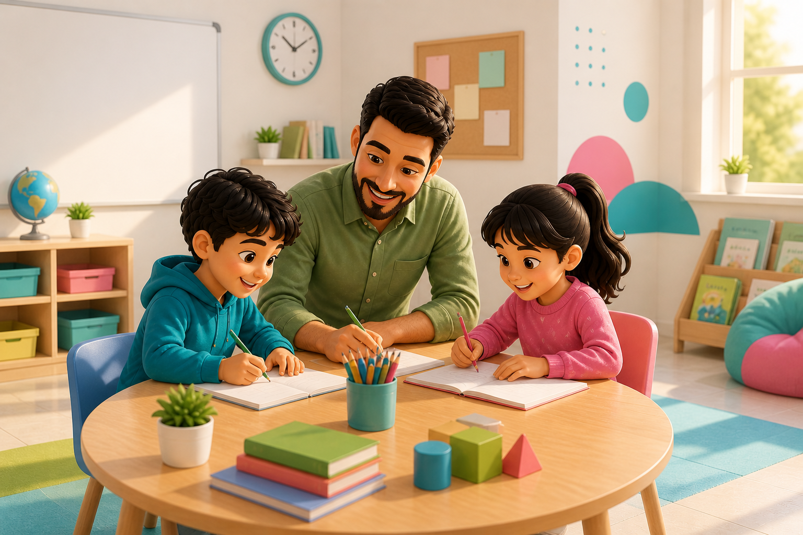

إجراءات توجيهية في العمل مع مجموعات الأطفال
باستخدام نهج الإسعاف النفسي الأولي (PFA) وقت الطوارئ والأزمات

يأتي هذا الدليل ضمن إطار مشروع "مدرسة البلد" الذي ينفّذه مركز التعليم المستمر في جامعة بيرزيت، بدعم من منظمة اليونيسف (UNICEF). يهدف المشروع إلى دعم التعلم وتعزيز رفاهية الأطفال في المناطق التي تعاني من الاعتداءات المستمرة من المستوطنين والاحتلال في جنوب نابلس، إضافة إلى تقديم الدعم النفسي والاجتماعي.
يركز المشروع على تمكين مراكز التعلم المجتمعي وتوفير بيئة تعليمية شاملة، آمنة وداعمة لما يقارب 1500 طفل وطفلة، وذلك من خلال تبني حلول تعليمية مبتكرة تراعي السياق المحلي والتحديات الراهنة. يتم تنفيذ المشروع في خمس قرى جنوب محافظة نابلس: جالود، قريوت، قصرة، اللبن الشرقية، والساوية.
تعزيز التعلم والدعم النفسي والاجتماعي للأطفال من الفئة العمرية 6 – 15 سنة.
بناء قدرات مراكز التعلم المجتمعي لضمان استدامة الخدمات التعليمية.
تطوير حلول تعليمية مبتكرة تتناسب مع احتياجات المجتمع.
تم إعداد هذا الدليل لميسّري جلسات الدعم النفسي الاجتماعي الجماعية ضمن مشروع "مدرسة البلد"، بهدف تمكينهم من العمل مع الأطفال في الفئة العمرية من 6 إلى 15 عامًا، لا سيما في سياقات الأزمات والطوارئ.
يوفّر الدليل إرشادات عملية وآمنة لإدارة ديناميكيات المجموعات بطريقة داعمة، بالاستناد إلى مبادئ الإسعاف النفسي الأولي. وتُستخدم هذه الإرشادات أثناء الجلسات التي تُنفذ في أماكن آمنة كالمراكز المجتمعية أو المدارس، بهدف توفير مساحة تمكّن الأطفال من التعبير عن مشاعرهم والتكيّف مع التحديات النفسية والاجتماعية التي يواجهونها.
⚠ ملاحظة مهمة:
هذا الدليل لا يغطي الجوانب العلاجية أو التشخيصية العميقة للحالات النفسية. الميسرون لا يُتوقع منهم أن يؤدوا دور الأخصائي النفسي أو المعالج، بل أن يكونوا حضورًا داعمًا وآمنًا، ويُحيلوا الحالات التي تتطلب تدخلًا متخصصًا إلى الجهات المختصة.
العمل مع الأطفال في سياقات الأزمات ليس مهمة سهلة، لكنه من أكثر الأدوار إنسانية وتأثيراً. يمثّل هذا الدليل أداة عملية لمرافقتهم في بيئة آمنة وداعمة، من خلال أنشطة مبنية على مبادئ الإسعاف النفسي الأولي. وهو لا يغني عن التخصص، لكنه يوفر إطارًا مبسّطاً لميسّرين وميسّرات يعملون في ظروف حساسة، مع أطفال يحتاجون إلى من يُنصت، يُطمئن، ويُقدّر مشاعرهم.
هذا الدليل هو نقطة انطلاق لمسيرة من الإصغاء والدعم والرعاية. كل لقاء تُنفّذونه وفق هذا المرجع هو خطوة صغيرة في خلق بيئة أكثر احتواءً وثقة.
كل جلسة تُنفذ بمحبة، وكل لحظة إنصات صادق، وكل نشاط يُمارس بوعي… تترك أثرًا لا يُنسى في حياة طفل. وجودكم الآمن والداعم هو ما يصنع الفرق، وأنتم البداية الحقيقية لكل مساحة آمنة.
استخدموا هذا الدليل كأداة مرنة تتكيّفون معها، لا كنصّ جامد. لاحظوا، اسألوا، استمعوا، وكونوا حاضرين، بكل قلوبكم ووعيكم. نثق بقدرتكم على إحداث فرق حقيقي، خطوة بخطوة، وطفلاً وطفلةً.